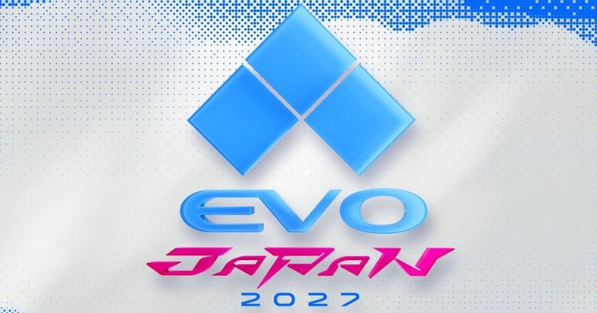

EVO Japan 2027 locks in seven games — and Marvel Tokon makes its EVO debut
The Evolution Championship Series revealed the EVO Japan 2027 lineup on Monday: seven main-stage games, headlined by Street Fighter 6 and Tekken 8, with Marvel Tokon: Fighting Souls making its first-ever EVO Japan appearance — and 2XKO nowhere on the list.

---
Disclosure: this post contains affiliate links. I earn a commission on qualifying purchases.
EVO Japan 2027 has its lineup. The Evolution Championship Series revealed the seven main-stage games during its announcement show on Monday, November 24, and the field is mostly familiar faces — with one debut and one notable absence doing most of the talking.
The tournament runs April 29 to May 1, 2027, at Tokyo Big Sight in Tokyo. Tickets and player registration open December 4.
The seven games
• Street Fighter 6 (Capcom) — fourth appearance
• Tekken 8 (Bandai Namco) — fourth appearance
• Guilty Gear -Strive- (Arc System Works) — sixth appearance
• MARVEL Tōkon: Fighting Souls (Sony / Arc System Works) — first appearance
• Fatal Fury: City of the Wolves (SNK) — second appearance
• Granblue Fantasy Versus: Rising (Cygames / Arc System Works) — fourth appearance
• Virtua Fighter 5 R.E.V.O. World Stage (SEGA) — second appearance
The headline is Marvel Tokon. The tag-team Marvel fighter from Sony and Arc System Works has been one of the most anticipated fighting games in years, and EVO Japan will be its first appearance at the event — its first real competitive stage anywhere. Guilty Gear Strive, meanwhile, extends its run as the event's most loyal mainstay with a sixth appearance.
The omission
The talking point after the reveal is the game that is not there: 2XKO, Riot's tag fighter, does not appear on the main lineup despite making its EVO debut at last year's event. Also absent are The King of Fighters XV, Melty Blood: Type Lumina, and Under Night In-Birth II Sys:Celes.
That is not a verdict on any of those games — side tournaments and community brackets are a huge part of EVO Japan, and the main stage has always been a seven-game squeeze. But for a lineup reveal, the empty chair gets as much attention as the chairs that are filled, and 2XKO's is the one people noticed.
What else is coming
Outside the competition, EVO Japan 2027 will feature an EVO Museum centered on fighting game villains. And with the games set, the schedule now follows player registration volume — the same as past years, where the biggest brackets decide which finals close out the weekend.
EVO Japan has become the spring anchor of the fighting game calendar, the counterpart to the summer main event in Las Vegas. Seven games, three days, one of the loudest rooms in competitive gaming — and a Marvel debut that will have the fighting game world watching Tokyo in April.
Sources: EVO Japan 2027 main game lineup includes Marvel Tokon, Fatal Fury & Street Fighter 6 (Shacknews) · EVO Japan 2027 lineup revealed (GoNintendo) · EVO Japan 2027 lineup: Tekken 8, SF6 and Marvel Tokon (GamerPapers, via Gematsu) · The Evo Japan 2027 lineup features mostly familiar picks, with some notable omissions (Variable)
Gear up: Razer — mice, keyboards, headsets and laptops.